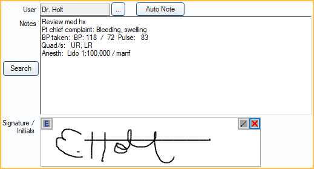

Procedure Notes
Procedure notes are daily treatment notes that are stored with the procedure.
In the Procedure Edit window, at the right, is the Procedure Note area.
They can include anything that normally goes into chart notes, such as materials used, procedures followed, treatment performed, anesthetic, informed consent, etc. Procedure notes support Electronic Signatures.
Hints
Default Notes: To simplify data entry of procedure notes, set up default notes for a Procedure Code that automatically copy into a procedure when it is added to a patient's chart. Default notes can be set up for treatment planned and/or completed procedures.
- Completed Note: A note that automatically copies into the procedure note when the procedure is set complete.
- TP'd Note: The note that automatically copies into the procedure note when the procedure has a status of treatment planned.
Incomplete Notes: Use two quotes "" in a note to remind staff to enter specific information in a note (Example: Due Date ""). If the information is not completed within the procedure, a red Incomplete Note warning will appear above the note. To view a list of completed procedures with incomplete notes, see Incomplete Procedure Notes Report. Other examples: composite shade, crown shade, denture shade, due date, blood pressure, nitrous levels, etc.
Auto Notes: Insert Auto Notes in procedure notes to prompt staff to enter information.
- If the preference, Procedures Prompt for Auto Note, is enabled then opening the Procedure Info window will trigger any unanswered auto note prompts.
Note Edits: By default, when a procedure note is edited by two or more users at the same time, the note saved last will show in the chart. The overwritten note is still visible when the Chart is in Audit mode. To merge notes together instead, enable the preference, Procedure notes merge together when concurrency issues occur.
Procedure Group Notes: Create one Procedure Group Note for multiple procedures instead of attaching notes to individual procedures.
Signature: When the preference Block procedure note signatures when there are uncompleted auto note prompts is enabled, users will be unable to save signed Procedure Notes if there are incomplete auto note prompts. Click Edit Auto Note to complete to Auto Note prompts or click the X in the signature box to clear the signature in order to save changes without signing the the Procedure Note.
For other note options, see Notes.
Security
All completed procedure notes are automatically and permanently stored in the database. Every change (editing or deleting a note) is recorded, and an archived note history can be viewed in the Chart Module under Show tab, Audit. The archived history of completed procedure notes is not editable and cannot be deleted.Permission-based Locking: There are several user Permissions that affect access to procedure notes.
- Create Completed Procedure (or set complete)
- Edit Completed Procedure (full)
- Edit Completed Procedure (limited)
- Edit EO or EC Procedures
- Show Procedure Fee
- TP Procedure Delete
- Procedure Note (full)
- Procedure Note (same user)
- Group Note Edit (other users, signed)
Procedure Lock: Lock procedures, only allowing notes to be appended. This is not used by most offices.
Examples
Below are some examples that show the difference between default procedure note templates and auto notes.
Strategy 1: Fill in the blank default note
Comprehensive Exam Medications: Allergies: Medical Conditions: PSR: Overall PSR: Soft Tissue Screening: Dental Exam: Treatment plan printed. Pt Concerns: PARQ: ""
Strategy 2: Pre-filled default note
Comprehensive Exam Medications: none Allergies: none Medical Conditions: none PSR:222222 Overall PSR:2 Soft Tissue Screening: WNL Dental Exam: No caries. Treatment plan printed. Pt Concerns: None PARQ.
Strategy 3: Auto note
Comprehensive Exam Medications: (pick from list) Allergies: (pick from list) Medical Conditions: (pick from list) PSR:222222 Overall PSR:2 Soft Tissue Screening: (pick from list) Dental Exam: No caries. Treatment plan printed. Pt Concerns: None PARQ.